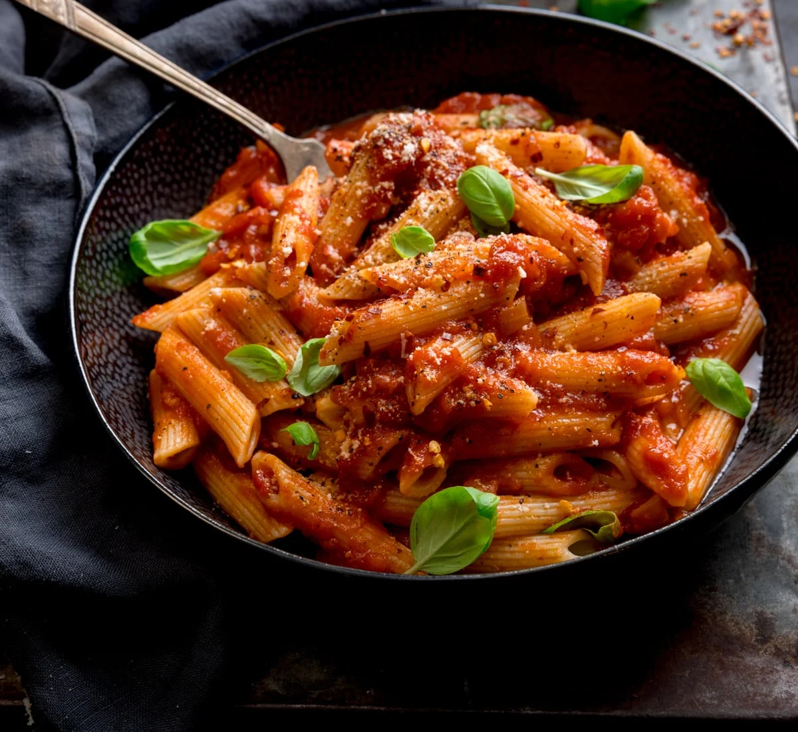

Another classic of Roman cuisine, penne all’arrabbiata is a pasta dish prepared with a fiery hot sauce made with tomatoes, olive oil, garlic, and red chili peppers. As the Italian word arrabbiata literally means angry, this meal is often mistranslated as angry pasta – the name, in fact, refers to the pasta’s intense, spicy sauce, which packs such a punch that it can easily make you red in the face.
Meal prep time : 25 minutes
Servings : 4